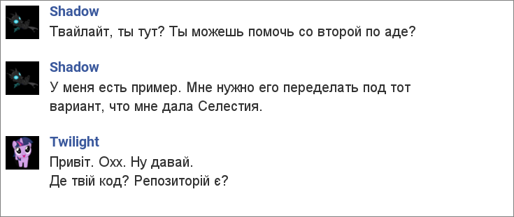
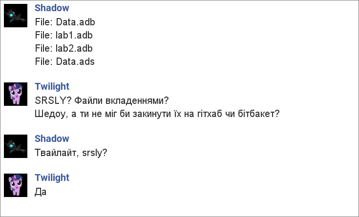
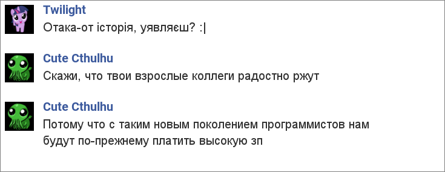
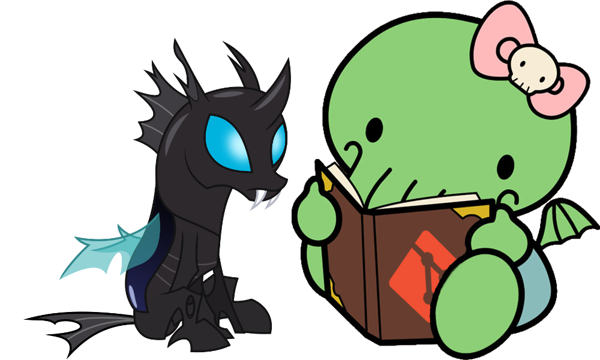

VCS
Three letters that can change your life
Why do I talk about this?
Meet main characters
This is a story with a few characters. Let meet them!
Cthulhu The Cute
Twilight The Gentoo Pony
Shadow The Gamer
Once upon a time in R'lyeh Programming University...
Shadow played games the whole semester. At the end of the semester he had to do a lot of tasks but he did not know how.
So he asked Twilight for help
And then the terrible thing happened
Cute Cthulhu's wise words:
So why do I talk about this?
Because...
Sharing source code as attachments in social networks is like using stone instruments nowadays
Because...
Version control systems simplify software development
Especially when several people work on the same code together
Because...
It is vital to programmer to know how to use version control systems
Boring part
What is Version Control System?
“ Version control is a system that records changes to a file or set of files over time so that you can recall specific versions later.”
Goals of VCS
- Allow developers to work simultaneously.
- Do not overwrite each other’s changes.
- Maintain history of every version of everything.
VCS classification
- Centralized version control systems (CVCS)
- Distributed version control systems (DVCS)
Centralized VCS
There is a single “central” copy of your project somewhere, and programmers commit their changes to this central copy.
CVCS Workflow
- Pull down any changes other people have made from the central server.
- Make your changes, and make sure they work properly.
- Commit your changes to the central server, so other programmers can see them.
Distributed VCS
Do not necessarily rely on a central server to store all the versions of a project’s files.
Every developer clones a copy of a repository and has the full history of the project on their own hard drive
Advantages over CVCS
- Faster
- Nobody sees unfinished work
- Less dependent on Internet
Version Control Systems
About 46 VCS exist now (https://goo.gl/imTGhs)
The most popular VCS
- Subversion
- Git
- Mercurial
Interesting part
Hello, git!
Initialize an empty repository
git init
Add files
git add
Commit changes
git commit
What is your status?
git status
Local history
git log
Branches
git branch
Switch working tree
git
checkoutGet it together
git merge
Put one onto another
git
rebaseWorking in team
Remotes
git remote add <name> <address>
Send commits to remote
git push <remote>
<branch>Update from remote
git fetch <remote>git pull <remote>
What to read next?

Git
Mercurial
Presentation by Oleksandr Kovalchuk